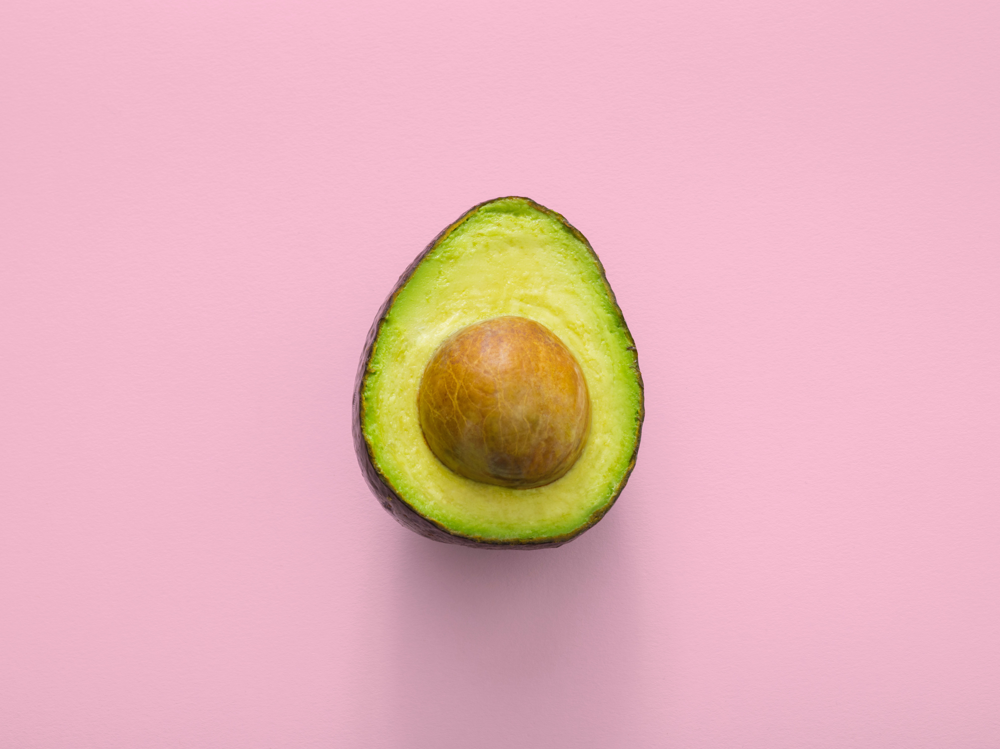

This page...
이 공간은 그저 저의 html 연습용 입니다. 이것은 최순욱군만 볼 수 있으며 그의 정보와 우리가 같이 공유했던 기억들.
그리고 그를 만나면서 제가 했던 생산적 활동들을 저장해 놓고자 만들게 되었습니다.
지금 저의 상태를 잠시 설명하자면 굉장히 배가 고프네요.
저는 오늘 점심을 미정0410이라는 식당에서 먹었습니다. 잔치국수와 명란마요주먹밥을 먹었죠.
분명 3시까지는 배가 부르다는 생각을 했던 것 같습니다.
밀가루라서 그랬던걸까요? 배가 쉽게 꺼졌습니다.
오늘 요가를 하러 갈 생각을 했는데 과연.. 제가 힘을 내서 요가를 할 수 있을지가 의문이군요.